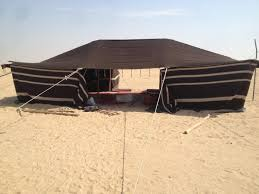
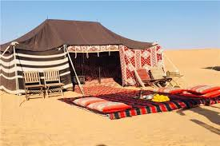
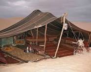
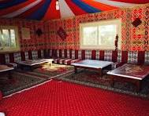

ما هي خيمة العرب؟
خيمة العرب هي واحدة من أقدم وأشهر أنواع الخيام التي استخدمها الناس في المناطق الصحراوية. كانت تستخدم منذ آلاف السنين من قبل البدو، وهم الناس الذين يعيشون حياة متنقلة في الصحراء. الخيمة كانت توفر لهم المأوى والحماية من الظروف الجوية القاسية.
---------------------
كيف تنصب خيمة العرب؟
اختيار المكان المناسب: ابحث عن مكان مستوٍ بعيد عن الصخور والحجارة
تثبيت الأعمدة: تحتاج إلى أعمدة خشبية أو معدنية لتثبيت الخيمة
ربط الحبال: استخدم الحبال لربط الأغطية بالأعمدة وتثبيتها في الأرض باستخدام أوتاد.
تأمين الخيمة: تأكد من أن الحبال مشدودة بشكل جيد وأن الخيمة مثبتة بإحكام في الأرض حتى لا تطير بفعل الرياح.
تثبيت الأعمدة: تحتاج إلى أعمدة خشبية أو معدنية لتثبيت الخيمة
ربط الحبال: استخدم الحبال لربط الأغطية بالأعمدة وتثبيتها في الأرض باستخدام أوتاد.
تأمين الخيمة: تأكد من أن الحبال مشدودة بشكل جيد وأن الخيمة مثبتة بإحكام في الأرض حتى لا تطير بفعل الرياح.
---------------------
مميزات خيمة العرب؟
التهوية الجيدة: توفر تهوية جيدة بفضل المواد المستخدمة في صنعها، مما يجعلها مريحة في الطقس الحار
سهولة النقل: يمكن تفكيكها ونقلها بسهولة، وهذا مهم لحياة البدو المتنقلة.
توفير الظل: توفر الظل والحماية من الشمس الحارقة في الصحراء.
سهولة النقل: يمكن تفكيكها ونقلها بسهولة، وهذا مهم لحياة البدو المتنقلة.
توفير الظل: توفر الظل والحماية من الشمس الحارقة في الصحراء.
---------------------
عيوب خيمة العرب؟
الحماية من الأمطار: قد لا توفر حماية كافية من الأمطار الغزيرة.
الدفء في الشتاء: قد لا تكون دافئة بما يكفي في الطقس البارد.
التثبيت في الرياح القوية: تحتاج إلى تثبيت جيد حتى لا تتأثر بالرياح القوية.
الدفء في الشتاء: قد لا تكون دافئة بما يكفي في الطقس البارد.
التثبيت في الرياح القوية: تحتاج إلى تثبيت جيد حتى لا تتأثر بالرياح القوية.
---------------------
ملاحظات إضافية
تعتبر الخيام جزءًا مهمًا من التراث الثقافي العربي، وتستخدم حتى اليوم في العديد من المناسبات التقليدية والاحتفالات.
تجربة نصب خيمة العرب يمكن أن تكون تجربة ممتعة وتعليمية للأطفال، تعزز من فهمهم للتاريخ والثقافة العربية.
تجربة نصب خيمة العرب يمكن أن تكون تجربة ممتعة وتعليمية للأطفال، تعزز من فهمهم للتاريخ والثقافة العربية.
---------------------



